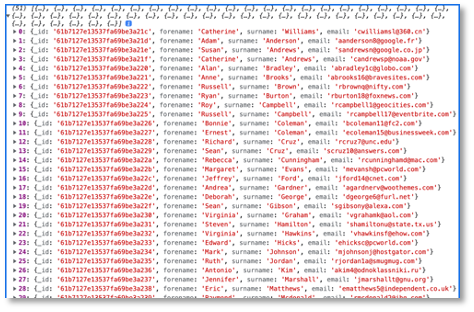

Frontend-Backend-Anbindung¶
Wir haben jetzt ein Backend, das als REST-Server funngiert. Über die Endpunkte der REST-API können wir auf die einzelnen Funktionen des Backends zugreifen, um die Daten in der MongoDB (oder der PostgreSQL) zu manipulieren (erzeugen, lesen, ändern und löschen - CRUD). Unser Frontend stellt zur Zeit nur einen Daten-Service zur Verfügung, der die Daten client-seitig verwaltet. Dies wollen wir jetzt ändern. Das Frontend soll mit dem Backend kommunizieren, um die Daten zu nutzen, die das Backend zur Verfügung stellt.
Video aus der Vorlesung am 20.12.2021
Wir werden uns ein neues Frontend erstellen und dabei die einzelnen Schritte genauer untersuchen (bzw. wiederholen). Das hat folgende Vorteile:
- wir werden sicherer bei der Erstellung von Frontends mithilfe von Angular,
- wir müssen nicht auf bestehende Frontends aufsetzen, die evtl. bei einigen von Ihnen nicht richtig funktionieren,
- wir haben die Möglichkeit, tiefer in die Prinzipien von Angular einzutauchen und wesentliche Prinzipien ausführlicher zu diskutieren.
Ich werde das Frontend, das ich hier erstelle, frontend nennen. Der Name bleibt natürlich Ihnen überlassen. Wir erstellen uns also neben unserem alten Frontend, neben dem Backend usw. in unserem Repository mithilfe von
ng new frontend --routing
ein neues Angular-Projekt und wählen CSS. Wir wechseln in den frontend-Ordner und erzeugen uns dort 6 neue Komponenten:
cd frontend
ng g c nav
ng g c footer
ng g c home
ng g c table
ng g c create
ng g c detail
Außerdem fügen wir Bootstrap hinzu. Da es mit dem anderen Bootstrap-Projekt bei einigen von Ihnen Kompatibilitätsprobleme gab, verwenden wir nun einmal ngx-bootstrap. Ich hoffe, das klappt besser.
ng add ngx-bootstrap
Die Ausgabe sollte ungefähr so aussehen:
ℹ Using package manager: npm
✔ Found compatible package version: ngx-bootstrap@7.1.0.
✔ Package information loaded.
The package ngx-bootstrap@7.1.0 will be installed and executed.
Would you like to proceed? Yes
✔ Package successfully installed.
✅️ Added "bootstrap
✅️ Added "ngx-bootstrap
UPDATE package.json (1127 bytes)
UPDATE angular.json (3194 bytes)
UPDATE src/app/app.module.ts (732 bytes)
✔ Packages installed successfully.
und in der angular.json sollte irgendwo der folgende Eintrag zu finden sein:
"styles": [
"./node_modules/ngx-bootstrap/datepicker/bs-datepicker.css",
"./node_modules/bootstrap/dist/css/bootstrap.min.css",
"src/styles.css"
],
Tip
Sollte es bei der Installation von Bootstrap Probleme geben, dann bleibt Ihnen immernoch die einfache Variante, Bootstrap über ein CDN direkt in die index.html einzubinden, mit z.B. <link href="https://cdn.jsdelivr.net/npm/bootstrap@5.1.3/dist/css/bootstrap.min.css" rel="stylesheet" integrity="sha384-1BmE4kWBq78iYhFldvKuhfTAU6auU8tT94WrHftjDbrCEXSU1oBoqyl2QvZ6jIW3" crossorigin="anonymous"> (siehe Bootstrap)
Navigation und Routing¶
Wir passen unsere nav-Komponente an und können dabei gleich mal überprüfen, ob Bootstrap funktioniert. Den Code habe ich von hier entnommen. Außerdem erstellen wir noch einen footer und die home-Seite und legen die Routen fest:
<nav class="navbar navbar-expand-lg navbar-light bg-light">
<div class="container-fluid">
<a class="navbar-brand" href="http://freiheit.f4.htw-berlin.de/webtech/fe-be-anbindung/">WebTech</a>
<button class="navbar-toggler" type="button" data-bs-toggle="collapse" data-bs-target="#navbarNavAltMarkup" aria-controls="navbarNavAltMarkup" aria-expanded="false" aria-label="Toggle navigation">
<span class="navbar-toggler-icon"></span>
</button>
<div class="collapse navbar-collapse" id="navbarNavAltMarkup">
<div class="navbar-nav">
<a class="nav-link" aria-current="page" [routerLink]="'/'">Home</a>
<a class="nav-link" [routerLink]="'/table'">Table</a>
<a class="nav-link" [routerLink]="'/member'">New</a>
</div>
</div>
</div>
</nav>
<div class="fixed-bottom text-white-50 bg-dark p-3 text-center">
Frontendanbindung an das Backend
</div>
<main class="d-flex align-items-center min-vh-100">
<div class="container text-center">
Welcome home!
</div>
</main>
main {
background-color: grey;
}
Hier die Routendefinitionen und das Einbinden der Komponenten:
import { NgModule } from '@angular/core';
import { RouterModule, Routes } from '@angular/router';
import { CreateComponent } from './create/create.component';
import { DetailComponent } from './detail/detail.component';
import { HomeComponent } from './home/home.component';
import { TableComponent } from './table/table.component';
const routes: Routes = [{
path: "",
component: HomeComponent,
pathMatch: 'full'
},
{
path: "table",
component: TableComponent
},
{
path: "member",
component: CreateComponent
},
{
path: "member/:id",
component: DetailComponent
}];
@NgModule({
imports: [RouterModule.forRoot(routes)],
exports: [RouterModule]
})
export class AppRoutingModule { }
<app-nav></app-nav>
<router-outlet></router-outlet>
<app-footer></app-footer>
Service für HTTP¶
Wir bereits beim Routing-Thema eingeführt, erstellen wir auch nun wieder einen Service zur Verwaltung der Daten. Dieses Mal sind die Daten aber nicht direkt im Code, sondern wir greifen mit dem Service auf das Backend zu, vielmehr auf die Endpunkte des Backends:
| Methode | URL | Bedeutung |
|---|---|---|
| GET | /members | hole alle Datensätze |
| GET | /members/11 | hole den Datensatz mit der id=11 |
| POST | /members | füge einen neuen Datensatz hinzu |
| PATCH | /members/11 | ändere den Datensatz mit der id=11 |
| DELETE | /members/11 | lösche den Datensatz mit der id=11 |
| DELETE | /members | lösche alle Datensätze |
Wobei der Wert der id nur ein Beispiel ist.
Wir erstellen uns im Ordner shared einen backend-Service:
ng g service shared/backend
In diesem Service wollen wir ein Modul verwenden, dass die Kommunikation mit dem Backend per HTTP ermöglicht. Diese Modul heißt HttpClientModule und muss zunächst für die Anwendung in app.module.ts importiert werden:
1 2 3 4 5 6 7 8 9 10 11 12 13 14 15 16 17 18 19 20 21 22 23 24 25 26 27 28 29 30 31 32 33 34 | |
Das HttpClientModule enthält einen Service HttpClient, der alle HTTP-Anfragemethoden, also GET, POST, PUT, PATCH, DELETE usw. als Funktionen bereitstellt. Diesen Service wollen wir in unserem backend-Service verwenden und binden ihn deshalb dort per dependency injection ein:
1 2 3 4 5 6 7 8 9 10 | |
Im Sinne der Typsicherheit erstellen wir uns auch hier wieder ein Interface für unsere Daten, um diesen als Typ zu verwenden. Beim letzten Mal hatten wir das Interface generisch Data genannt. Wir nennen es nun konkreter Member und erstellen es ebenfalls im shared-Ordner:
ng g interface shared/member
Wir übernehmen hier das Datenmodell, das wir für die MongoDB gewählt hatten. Bei der PostgreSQL hatten die Eigenschaften andere Namen (id, firstname, lastname)! Das sollte dann entsprechend angepasst werden - je nachdem, welches Backend verwendet wird.
1 2 3 4 5 6 | |
get()-Funktion von HttpClient¶
Wir erstellen nun die erste "Verknüpfung" mit dem Backend und implementieren ein GET-Request an das Backend, um alle members abzufragen. Dazu verwenden wir die get()-Funktion des HttpClient-Services.
Die einfachste Form der Anwendung der get()-Funktion besteht darin, dieser Funktion die entsprechende URL des Backends zu übergeben. In unserem Fall also
http.get('http://localhost:3000/members');
Diese Funktion gibt ein sogenanntes Observable zurück. Observables implementieren das Observer Pattern - ein Design Pattern zur Kommunikation zwischen einem sogenannte subject, das einen oder mehrere observers beobachtet und das immer dann informiert wird, sobald sich der Zustand eines observers geändert hat. Eine typische Implementierung des Observer Patterns findet durch Ereignis-Listener statt. Jemand (das subject) meldet sich an einem observer an, z.B. einem Button (genauer gesagt, an das Click-Ereignis des Buttons) und wird informiert, sobald der Button gecklickt wurde.
Die Grundidee bei Observables in TypeScript ist die, dass es eine Funktion gibt, die Werte ermittelt (z.B. http.get()), aber diese Funktion nur ausgeführt wird, wenn sie jemand subscribed. subscribe() ist also wie eine Anmeldung an den zu beobachtenden Wert.
Wir schauen uns dieses Prinzip mal mit der get()-Funktion des HttpClients an:
1 2 3 4 5 6 7 8 9 10 11 12 13 14 15 16 17 | |
Zunächst einmal sehen wir in Zeile 15 den Aufruf der get()-Funktion von HttpClient. Der get()-Funktion wird als Parameter die URL des Backends übergeben. Diese ist in der Eigenschaft baseUrl in Zeile 10 definiert.
Die Rückgabe der get()-Funktion ist, wie gesagt, ein Observable. Wir erzeugen den Aufruf der get()-Funktion in einer von uns erstellten Funktion getAll()deren Rückgabetyp dieses Obervable ist (Zeile 14). Dieses Observable ist sogar typisiert, nämlich mit unserem Datenmodell-Typ Member. Vielmehr bekommen wir ein Array von Member-Objekten zurück, deshalb Observable<Member[]> als Rückgabetyp der getAll()-Funktion. Da wir diesen Rückgabetyp so konkret angeben (und nicht einfach nur Observable oder Observable<any>, erfordert TypeScript auch, dass wir die get()-Funktion typisieren - deshalb get<Member[]>().
Wir müssen sowohl Observable (aus rxjs) als auch Member (aus unserer member.ts) importieren (Zeilen 3 und 4). Nun müssen wir uns noch an dieses Observable mittels subscribe() anmelden. Das machen wir in unserer TableComponent.
subscribe()¶
In unserer TableComponent wollen wir die getAll()-Funktion unseres Backend-Services nutzen, um uns alle members-Datensätze vom Backend anfragen und anzeigen zu lassen. Wir öffnen dazu die table.component.ts:
1 2 3 4 5 6 7 8 9 10 11 12 13 14 15 16 17 18 19 20 21 22 23 24 25 26 27 28 29 30 | |
Zunächst binden wir den BackendService mittels dependency injection in unsere Komponente ein (Zeile 13). In einer eigenen Funktion readAll() rufen wir nun die getAll()-Funktion des BackendService auf (Zeile 20). Wie in dem Abschnitt zuvor erläutert, wird diese Funktion nur durch ein subscribe() ausgeführt. Die subscribe()-Funktion "holt" das Observer-Objekt, welches drei sogenannte callback-Funktionen definiert: next, error und complete. Callback-Funktionen sind hier erläutert. Wir haben also drei Parameter in der subscribe()-Funktion, von denen jedoch nur einer (next) erforderlich ist. error und complete sind optional.
Unter next erhalten wir die response zurück, also das angefragte Objekt. Wir verwenden dafür eine Arrow-Funktion (siehe Arrow-Funktionen). Wie wir diese Funktion nennen, bleibt uns überlassen. Hier heißt sie response. Wir haben diese Funktion auch mit Member[] typisiert, da sie uns ein Member-Array zurückgibt. Der Inhalt dieser Funktion ist die Zuweisung der response auf unsere Eigenschaft members vom Typ Member[] (definiert in Zeile 11) und der Rückgabe der response (wir geben this.members zurück, entspricht aber genau der response). Die Konsolenausgabe kann natürlich auch raus.
Backend starten¶
Um die Anbindung an das Backend zu testen, dürfen wir nicht vergessen, es zu starten! Wechseln Sie im Terminal in Ihren Backend-Ordner und rufen dort
node server.js
auf. Es erscheint im Terminal (wenn das MongoDB-Backend gestartet wird)
Server started and listening on port 3000 ...
connected to DB
Frontend starten¶
Wir müssen unser Frontend compilieren ng serve und wenn wir dann im Browser http://localhost:4200/table eingeben, also die Route zu unserer TableComponent, dann sollten wir in der Konsole in den Entwicklertools die Ausgabe der Response sehen (die ids und auch die Anzahl der Einträge können bei Ihnen anders sein):

Achtung! Man sieht nichts auf der Webseite, sondern wir geben die Datensätze derzeit nur in der Konsole der Entwicklertools aus!
Success
Wir haben das Backend an das Frontend angebunden. Wir haben die erste Anfrage an das Backend im Frontend umgesetzt, nämlich GET /members, indem wir im Frontend die get()-Funktion des HttpClient implementiert und diese in der TableComponentmittels subscribe() ausgeführt haben. Wir werden nun zunächst die Daten noch im HTML-Template darstellen und dann weitere Endpunkte unserer REST-API anbinden.
R-ead -- TableComponent¶
Wir wollen eine ansprechende Ansicht der Daten erzeugen. Wir werden die Daten in einer Tablle anzeigen und verwenden dazu Bootstrap-CSS-Klassen für das Design. Dazu wollen wir auch Bootstrap-Icons (oder auch diese) verwenden. Diese installieren wir die Icons mit
npm i bootstrap-icons
(für die ngx-bootstrap-icons müssten Sie npm i ngx-bootstrap-icons eingeben). Um die Icons in der TableComponent einfach verwenden zu können, werden die Icons in der table.component.css importiert:
@import url('../../../node_modules/bootstrap-icons/font/bootstrap-icons.css');
Die Bootstrap-Klassen für eine Tablle können hier entnommen werden.
1 2 3 4 5 6 7 8 9 10 11 12 13 14 15 16 17 18 19 20 21 22 23 24 25 26 27 28 29 | |
In der table.component.ts wird beim Erstellen der Komponente (ngOnInit()) die Variable members mit allen Daten aus der Datenbank befüllt. Dieses Array wird in der table.component.html ausgelesen. Wir verwenden dazu wieder die *ngFor-Direktive (siehe Zeile 15).
Die erste Spalte der Tabelle wird einfach mit einer fortlaufenden Nummer befüllt, in die zweite Spalte kommt der Vorname (member.forename) und in die dritte Spalte der Nachname (member.surname) - siehe Zeilen 16-18. In Zeile 20 erstellen wir einen Link, um an die E-Mail-Adresse (member.email) eine E-Mail zu senden. Der Inhalt des Links ist das Bootstrap-Icon bi-envelope - siehe hier.
In Zeile 21 definieren wir ebenfalls einen Link, dieses Mal aber keinen Hyperlink, sondern einen Routerlink unter Verwendung der _id von member. Es entsteht der Aufruf der Route /member/:id, wobei für die :id die entsprechende _id von member eingesetzt wird. Inhalt des Links ist das Bootstrap-Icon pencil-square.
In Zeile 22 verwenden wir das Bootstrap-Icon trash. Dieses wird an das click-Ereignis angemeldet. Sobald das Icon angeklickt wird, wird die Methode delete(id) aufgerufen. Dieser Methode wird die jeweilige _id von member übergeben. Diese Methode delete(id) muss dazu in der table.component.ts definiert werden. Um die vollständige Implementierung der Methode kümmern wir uns später. Zunächst fügen wir sie nur ein, damit kein Fehler beim Übersetzen der Anwendung mehr passiert und geben einfach die übergebene _id auf die Konsole aus:
1 2 3 4 5 6 7 8 9 10 11 12 13 14 15 16 17 18 19 20 21 22 23 24 25 26 27 28 29 30 31 32 33 | |
- Wenn Sie nun auf das
trash-Icon klicken, wird in der Konsole Ihrer Developer-Tools die_idvonmemberaus dieser Zeile ausgegeben. - Wenn Sie nun auf das
pencil-Icon klicken, wird dieDetailComponentaufgerufen (in der URL steht dann soetwas wiehttp://localhost:4200/member/61b7127e13537fa69be3a21c). - Wenn Sie nun auf das
envelope-Icon klicken, wird Ihr E-Mail-Client aufgerufen und in der Empfängerzeile der E-Mail ist dieemailvonmembereingetragen.
U-pdate -- DetailComponent¶
Die detail-Komponente wird durch die Route /member/:id aufgerufen, wobei :id einer _id eines member entspricht. Die Idee dieser Komponente ist, den Datensatz von member zu ändern. Wir erstellen ein Formular, in dem die Daten von member eingetragen werden, so dass sie aktualisiert werden können. Werden diese neuen Daten an das Backend gesendet, wird dort die update-Funktion aufgerufen, d.h. wir sprechen beim Senden der Daten den Endpunkt PATCH /members/:id an.
Zunächst implementieren wir, dass der Datensatz von member, dessen _id in der Route übergeben wird, aus der Datenbank geholt wird. Dazu
- erweiteren wir den
BackendServiceum eine FunktiongetOne(id), die den EndpunktGET /members/idder REST-API des Backends aufruft. - Wir nutzen diese Funktion, um in der
detail.component.tsdie Daten diesesmemberzu speichern. Dazu gehen wir wie beim Routing mit parametrisierten Routen gezeigt, vor.
1 2 3 4 5 6 7 8 9 10 11 12 13 14 15 16 17 18 19 20 21 | |
1 2 3 4 5 6 7 8 9 10 11 12 13 14 15 16 17 18 19 20 21 22 23 24 25 26 27 28 29 30 31 32 33 34 35 36 37 | |
Wenn wir nun die detail-Komponente durch Klick auf das pencil-Icon in der Tabelle aufrufen, wird beim Initialisieren der Komponente die Variable member mit den passenden Einträgen aus der Datenbank befüllt und auf der Konsole in den Developertools angezeigt. Wir nutzen erneut die subscribe()-Funktion des Observable, das durch die Funktion getOne(id) des BackendService erzeugt wird.
Um die Daten von member ändern zu können, laden wir diese in ein Formular. Der folgende Abschnitt diskutiert die Möglichkeiten der Formularerstellung in Angular.
Formulare in Angular¶
Formulare werden verwendet, um Nutzereingaben zu ermöglichen und die eingegebenen Daten zu verwalten, sie z.B. in einer Datenbank zu speichern. In Angular gibt es zwei verschiedene Ansätze, Forumlare zu erstellen:
- reaktive Formulare werden in der TypeScript-Klasse konzipiert und basieren auf einem unveränderlichen Datenmodell. Sie sind leichter zu skalieren als Template-basierte Formulare und besser wiederzuverwenden. Sie sind prinzipiell den Template-basierten Formularen vorzuziehen, außer dass Formular ist sehr einfach und besteht z.B. nur aus einem einzigen Eingabefeld.
- Template-basierte Formulare basieren auf Direktiven im HTML. Sie sind sehr einfach zu erstellen (direkt im HTML), können aber weniger einfach evaluiert und getestet werden und sind für strukturierte (verschachtelte) Datenmodelle ungeeignet.
Für weitere Informationen zu Formularen in Angular siehe hier.
Reactive Forms in *.component.ts¶
Wir verwenden hier reaktive Formulare. Die beiden wesentlichen TypeScript-Klassen bei Formularen sind
FormControlfür ein einzelnes Steuerelement (z.B. eininputoder einradioButton) undFormGroupfür eine zusammenhängende Menge von Steuerlementen (einem Formular).
Um reaktive Formulare zu verwenden, ist es wichtig, das Modul ReactiveFormsModule in die app.module.ts zu importieren!
1 2 3 4 5 6 7 8 9 10 11 12 13 14 15 16 17 18 19 20 21 22 23 24 25 26 27 28 29 30 31 32 33 34 35 36 | |
Wenn das vergessen wird, sind die Fehlerausgaben wirklich nicht zielführend und es ist recht schwierig, diesen Fehler zu finden! Reactive Forms werden, im Gegensatz zu den template-basierten Formularen, hauptsächlich in der TypeScript-Klasse erstellt. Wir passen deshalb unsere detail.component.ts wie folgt an:
1 2 3 4 5 6 7 8 9 10 11 12 13 14 15 16 17 18 19 20 21 22 23 24 25 26 27 28 29 30 31 32 33 34 35 36 37 38 39 40 41 42 43 44 45 46 47 48 49 50 51 52 53 54 55 56 57 58 59 60 61 62 | |
Wir erstellen uns eine Referenzvariable form vom Typ FormGroup (Zeile 15). Diese Variable zeigt auf unser Formular. Um das Formular zu erstellen, nutzen wir den FormBuilder. Diesen binden wir per dependency injection in unsere Klasse ein (Zeile 20). In den Zeilen 23-29 wird das Formular erzeugt. Es besteht aus drei Eingabefeldern, deren Eingabe jeweils validiert werden soll. Dazu werden Validators verwendet, ein vordefinierter Service von Angular.
In den Zeilen 35-39 werden den Eingabefeldern bereits Werte zugewiesen. Diese Werte werden member entnommen, welches durch die getOne(id)-Funktion des BackendService befüllt wurde. Um die Werte in das Formular einzutragen, bietet die Klasse FormGroup zwei Funktionen an:
setValue()- setzt für alleFormControl-Elemente innerhalb derFormGroupeinen Wert (value)patchValue()- kann allen oder bestimmten (einzelnen)FormControl-Elementen einen Wert (value) zuweisen.
Wir verwenden patchValue(), Sie können aber auch setValue() ausprobieren. Beachten Sie auch das ? hinter der member-Variablen bei den Wertzuweisungen. Es handelt sich dabei um den safe navigation operator.
Safe navigation operator¶
Um zu vermeiden, dass versucht wird, auf einen Wert zuzugreifen, der (noch) gar nicht existiert (undefined ist), kann der sogenannte safe navigation operator verwendet werden. Das Prinzip dieses Operators entspricht einer *ngIf-Direktive. Erst wenn der Wert ungleich undefined ist, wird er dargestellt. Die Syntax des safe navigation operators ist ein ?:
objekt?.eigenschaft
Solange objekt noch undefined ist, wird nicht auf die (noch nicht existierende) eigenschaft zugegriffen. Wir verwenden den safe navigation operator in der detail.component.ts ein:
35 36 37 38 39 | |
Jetzt wird zunächst geprüft, ob member überhaupt definiert ist (also nicht undefined). Wenn nicht, wird gar nicht erst auf die Eigenschaft (z.B. forename) zugegriffen. Ohne den Operator erhalten Sie eine Fehlermeldung, da z.B. der Zugriff undefined.forename versucht würde.
Reactive Forms in *.component.html¶
Das Formular existiert nun (als TypeScript-Objekt). Nun binden wir es in die detail.component.html ein.
1 2 3 4 5 6 7 8 9 10 11 12 13 14 15 16 17 18 19 20 21 22 23 24 25 26 27 | |
Es entsteht folgende Ansicht:

Um sich an das submit-Ereignis anzumelden, wird für das <form>-Element (ngSubmit) hinzugefügt und als dessen Wert die Funktion, die aufgerufen werden soll, beim Absenden des Formulars - hier die Funktion update() (die wir gleich noch in detail.component.ts implementieren). Für den Abbrechen-Button melden wir uns an das click-Ereignis mithilfe von (click) und der Angabe der Funktion, die ausgeführt werden soll (hier cancel()) an.
Das reaktive Formular form, das wir in der detail.component.ts erzeugt haben, wird mittels [formGroup]="form" als property binding dem <form>-Element übergeben. Im derzeitigen Stand der Implementierung von detail.component.ts erscheinen jedoch die Werte noch nicht in den Eingabefeldern. Das wollen wir uns zunächst einmal genauer ansehen.
Asynchrones Abarbeiten¶
Derzeit befüllen wir die Eingabefelder des Formulars mit Werten wir folgt (siehe oben detailcomponent.ts):
32 33 34 35 36 37 38 39 40 41 42 43 44 45 46 47 48 49 50 51 52 | |
Bei der Initialisierung der Komponente wird die readOne(id)-Funktion aufgerufen (Zeile 34). In dieser Funktion wird this.member mit Werten befüllt, die durch die getOne(id)-Funktion des BackendService geliefert werden (Zeile 46). Die Werte von this.member werden nach Aufruf der readOne(id)-Funktion verwendet, um den Eingabefeldern Werte zuzuweisen (Zeilen 36-38). Allerdings erfolgt die Abarbeitung der readOne(id)-Funktion und das Befüllen der Eingabefelder asynchron, d.h. nebenläufig. Es kann sein (und hier ist es so), dass member überhaupt noch keine Werte hat, wenn diese beim Befüllen der Eingabefelder verwendet werden sollen.
Dies ist eigentlich eine typische Anwendung für Promises. Hier benötigen wir dieses Konzept aber gar nicht. Wir müssen nur dafür sorgen, dass die Eingabefelder erst dann befüllt werden, wenn member einen Wert hat. Wir schieben das Befüllen der Eingabefelder deshalb in die subscribe()-Funktion des Observables getOne(id):
32 33 34 35 36 37 38 39 40 41 42 43 44 45 46 47 48 49 50 51 52 53 54 | |
Nun ist das Formular auch vorbefüllt.
Submit- und Cancel-Ereignisbehandlung¶
Wir implementieren nun die Funktionen cancel() und update(). Die cancel()-Funktion wird durch das click-Ereignis des Abbrechen-Buttons aufgerufen und die update()-Funktion durch den submit-Button Aktualisieren (siehe im Formular (ngSubmit)="update()"). Wenn wir auf Abbrechen klicken, dann wollen wir wieder zur Tabellenansicht zurück. Das erreichen wir mit dem Service Location aus @angular/common, der uns z.B. die back()-Funktion zur Verfügung stellt:
1 2 3 4 5 6 7 8 9 10 11 12 13 14 15 16 17 18 19 20 21 22 23 24 25 26 27 28 29 30 31 32 33 34 35 36 37 38 39 40 41 42 43 44 45 46 47 48 49 50 51 52 53 54 55 56 57 58 59 60 61 62 63 64 65 66 | |
Wenn wir nun auf Abbrechen klicken, dann haben wir das gleiche Verhalten, als würden wir im Browser auf zurück (oder back) klicken.
Wenn jedoch der Aktualisieren-Button gedrückt wird, dann soll der Datensatz in der Datenbank aktualisiert werden, d.h. es wird der Endpunkt PATCH /members/:id der REST-API angesprochen, wobei :id den Wert der _id des aktuell bearbeiteten Datensatzes erhält und die Werte aus dem Formular im body des request-Objektes übergeben werden. Dazu erweiteren wir zunächst den BackendService um eine entsprechende Funktion, die wir dort ebenfalls update() nennen und der die id sowie die Daten aus dem Formular übergeben werden.
1 2 3 4 5 6 7 8 9 10 11 12 13 14 15 16 17 18 19 20 21 22 23 24 25 | |
In der detail.component.ts werden in der update()-Funktion zunächst alle Werte des Formulars ausgelesen und in this.member gespeichert und dann wird die update()-Funktion des BackendService aufgerufen und ihr die this.id sowie this.member übergeben. Nachdem der Datensatz in der Datenbank aktualisiert wurde, wird wieder die table-Komponente aufgerufen. Dazu wird die navigateByUrl()-Funktion des Router-Services verwendet.
1 2 3 4 5 6 7 8 9 10 11 12 13 14 15 16 17 18 19 20 21 22 23 24 25 26 27 28 29 30 31 32 33 34 35 36 37 38 39 40 41 42 43 44 45 46 47 48 49 50 51 52 53 54 55 56 57 58 59 60 61 62 63 64 65 66 67 68 69 70 71 72 73 74 75 76 77 78 79 80 81 | |
Als nächstes implementieren wir noch die delete(id)-Funktion in der table.component.ts, um einen Datensatz zu löschen.
D-elete -- TableComponent¶
In der table-Komponente ist das Löschen eines Datensatzes bereits vorbereitet. Bei Klick auf das trash-Icon in der Tabelle wird die delete()-Funktion in der table.component.ts aufgerufen und ihr die _id des löschenden Datensatzes übergeben. Derzeit gibt die Funktion aber diese id nur auf der Konsole aus.
Wir implementieren zunächst eine deleteOne(id)-Funktion im BackendService. Es wird der Endpunkt DELETE /members/:id verwendet.
1 2 3 4 5 6 7 8 9 10 11 12 13 14 15 16 17 18 19 20 21 22 23 24 25 26 27 28 29 | |
Im Gegensatz zu den anderen Endpunkten, kann die response beim Aufruf von DELETE /members/:id leer sein (wenn der Datensatz gelöscht wurde) oder es wird ein Objekt mit einem error zurückgesendet (siehe hier). Die Typisierung des Observale ist deshalb nicht Member, sondern any. Da vom Backend jedoch der HTTP-Status in der response zurückgegeben wird (204 oder 404) wollen wir auf diesen Status zugreifen. Wäre die reponse leer, ginge das jedoch nicht. Deshalb legen wir mit {observe: 'response'} als zweitem Parameter fest, dass in jedem Fall eine response durch das Observable erzeugt wird.
Wir verwenden diese Funktion nun in unserer table.component.ts:
1 2 3 4 5 6 7 8 9 10 11 12 13 14 15 16 17 18 19 20 21 22 23 24 25 26 27 28 29 30 31 32 33 34 35 36 37 38 39 40 41 42 43 44 45 46 47 48 49 50 51 52 53 54 55 56 57 | |
Wir haben gleich mehrer Sachen hinzugefügt. Zunächst ruft die delete(id)-Funktion wie gewohnt die BackendService-Funktion deleteOne(id) mit subsribe() auf. Wir haben darin eine Fallunterscheidung, je nach zurückgegebenem HTTP-Status integriert mit jeweiliger Konsolen-Ausgabe (die können natürlich raus).
Um eine Nachricht anzeigen zu lassen, dass der Datensatz gelöscht wurde, fügen wir der TypeScript-Klasse die Eigenschaft deleted hinzu. Ist der Wert von deleted false wird die Tabelle angezeigt. Ist der Wert jedoch true wird die Löschnachricht angezeigt. In der Löschnachricht ist ein Button, dessen Klickereignis die Funktion reload() aufruft. In reload() wird die Tabelle neu geladen. Dazu werden zuvor nochmal alle Einträge aus der Datenbank mit readAll() geholt, damit man sieht, dass der Datensatz gelöscht wurde. Die table.component.html sieht nun so aus:
1 2 3 4 5 6 7 8 9 10 11 12 13 14 15 16 17 18 19 20 21 22 23 24 25 26 27 28 29 30 31 32 33 | |
Success
Wir haben nun die CRUD-Funktionen im Frontend implementiert und dafür das Frontend an das Backend vollständig angebunden. Zwar fehlt hier noch Create, aber das sollten Sie selbständig leicht hinbekommen. Schauen Sie sich das Formular für Update an, dann sollte das kein Problem sein! Ist eine gute Übung! Der Entwicklungsstack Datenbank <-> Backend <-> Frontend ist damit fertig und abgeschlossen. Eine weitere gute Übung für Sie wäre, statt des MongoDB-Backends das PostgreSQL-Backend anzubinden. Sie werden feststellen, dass nur sehr wenige Anpassungen notwendig sind. Wir haben nun alle Voraussetzungen besprochen, um die Semesteraufgabe zu erledigen. Im Januar werden wir noch einige nützliche Details diskutieren, wie z.B. modale Dialoge, Nutzer- und Rollenverwaltung, Verschlüsseln von Passwörtern, Hochladen von Bildern und Drag&Drop. Eventuell schauen wir uns noch Drittanbieter-APIs an, z.B. OpenStreetmap, mal sehen. Ansonsten wünsche ich allen ein frohes und gesundes Weihnachtsfest und einen guten Rutsch ins neue Jahr! Bleiben Sie gesund und viel Spaß und Erfolg mit der Semesteraufgabe und dem restlichen Studium!